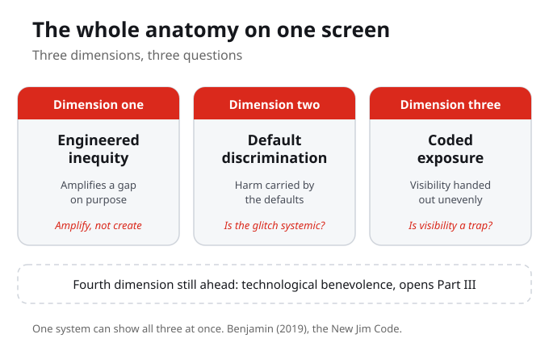
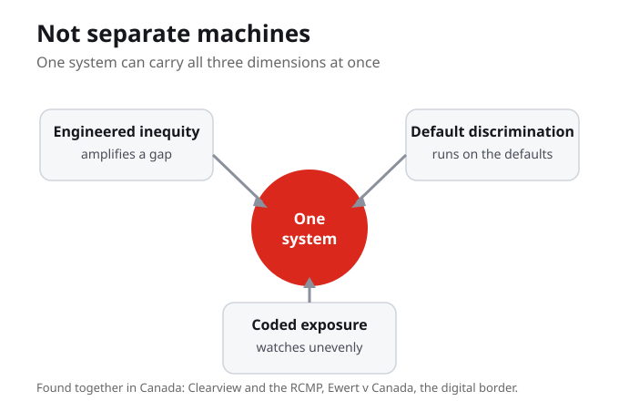
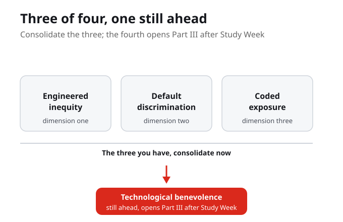

Here is the whole anatomy on one screen. Engineered inequity is a design that amplifies a gap on purpose, where the key word is amplify, not create. Default discrimination is harm carried by the defaults, where the key question is whether the glitch is systemic. Coded exposure is visibility handed out unevenly, where the key question is whether visibility is a trap. Three dimensions, three questions, and a fourth still ahead.
Three dimensions, three questions, and a fourth still ahead. Engineered inequity amplifies a gap on purpose, default discrimination is carried by the defaults, and coded exposure hands out visibility unevenly. The whole anatomy fits on one screen.
This week there is no new reading, and that is on purpose. Part II closes by assembling the parts you already have. You named three dimensions of the New Jim Code one at a time, engineered inequity, default discrimination, and coded exposure. Now you put them together into one working picture of how a discriminatory system actually produces harm.
The point of a consolidation week is not more facts, it is a clearer picture. You hold the whole anatomy in one view: the three dimensions, how they differ, and how they show up together in real Canadian systems.
In one sentence each, how would you define engineered inequity, default discrimination, and coded exposure?
Start with the first layer. Engineered inequity is a design that, by the way it is built, amplifies an existing hierarchy of race, class, or gender. The harm is active and built in. The key word is amplify, not create: the technology takes a gap that was already there in the world and makes it bigger and faster.
Engineered inequity does not invent a new prejudice. It takes an old one and scales it. That is why the right test is to ask what gap the design amplifies, not whether someone meant harm.
The second layer is quieter. Default discrimination is harm that arrives through the defaults: the settings, the data, and the assumptions that treat one group's world as normal. No one has to set out to discriminate. The key question is whether the glitch is systemic, because when the same error keeps landing on the same people, it is not a glitch, it is the design.
When a system fails the same group again and again, stop calling it a glitch. Default discrimination is what happens when one group's world is treated as the standard and everyone else is the exception.
How would you decide whether a harm is designed into a system or merely incidental?
The third layer is about visibility itself. Coded exposure is the uneven, designed distribution of being seen: some people watched too closely, others not seen at all. The key question is whether visibility is a trap. Buolamwini and Gebru measured one version of this in Gender Shades, where facial-analysis systems were near-perfect on lighter-skinned men and failed darker-skinned women far more often.
Being over-watched is a harm and being unseen is a harm, and for racialized people both can land at once. The coded gaze, measured in Gender Shades, is the evidence that whose face a system sees well is a design choice.

Two reminders. First, these are not separate machines. One system can amplify a gap, run on untested defaults, and watch unevenly all at once. Second, this is not abstract: we found all three in Canada, in Clearview and the RCMP, in Ewert v Canada, and at the digital border.
These are three ways the same systemic racism enters technology, not three machines that never overlap. A single real system can show more than one at once, which is exactly what you look for when you assemble the anatomy.
Where do the dimensions stack on the same person, at the intersection of race, gender, class, or status?
Hold the cases together. Robertson, Khoo, and Song document algorithmic policing across Canada: predictive policing, facial recognition, and social-media surveillance. Molnar describes digital border technologies, the surveillance, biometrics, and automated decisions used at borders, that operate through logics of exclusion. These are where the anatomy stops being theory and starts naming real harm.
Policing and the border are not side examples, they are where the three dimensions land on real people. The same tools tested on those with the least power to refuse are later used more widely.
Here is the move you practise this week. Take one real system and lay out its layers: the data it runs on, the model or logic that scores people, the place it is deployed, and the feedback loop that feeds the results back in. Then ask which dimension each layer reveals. Assembling the anatomy means seeing how the whole system, not one part, produces the harm.
Naming a single layer is a start, but the harm comes from how the layers work together. Data, model, deployment, and feedback loop are the parts you assemble to see the whole anatomy.
Pick a real system. Does it show one dimension, or more than one at once? How can you tell?
This week is not a separate 20 percent video assignment. Use the Knowledge Check, Reading Practice, and Concept Flashcards as rehearsal. Choose one system from your own Personal Cartography, practise naming which dimension or dimensions it reveals, and check whether you can explain who is harmed and how you know.
The goal is readiness. If you can explain one system clearly before Study Week, you will be better prepared for the next assignment work.

One dimension is still ahead. You have three of Benjamin's four; the fourth, technological benevolence, the false promise of help, opens Part III after the Study Week. For now, consolidate the three you have and rest, because next you turn from naming the problem to responding to it, using these dimensions on a system of your own.
You have three of Benjamin's four dimensions. The fourth, technological benevolence, opens Part III after the Study Week, when the course turns from naming harm to answering it.
End on an honest note. You can now name the anatomy of the New Jim Code, but naming a harm is not the same as ending it. Part III will ask what a response looks like. For this week, the work is to see the whole system clearly, because you cannot change what you cannot yet name.
Seeing clearly and changing something are two different acts. This week asks for the first so the course can ask for the second.
What is the difference between seeing a harm clearly and being able to change it?